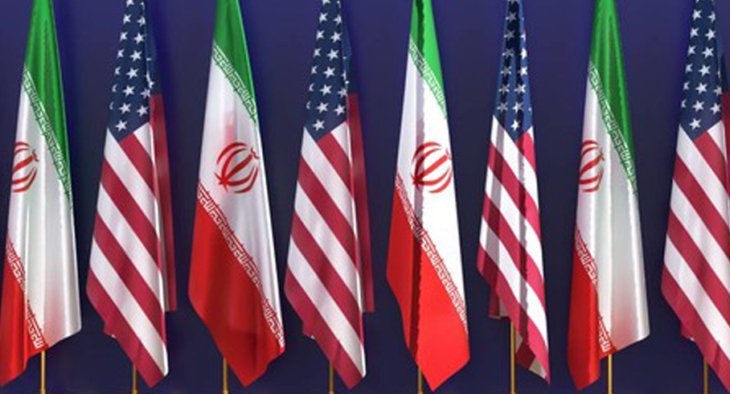
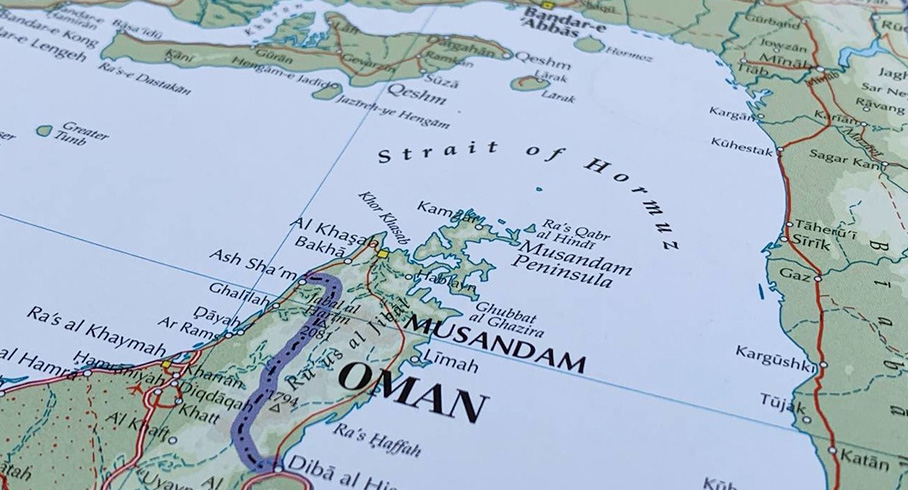
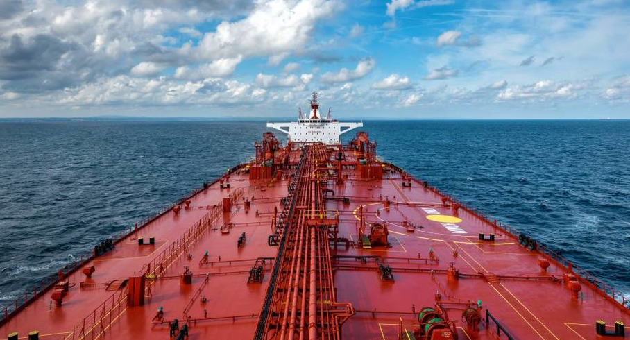

출처 : 물류신문, 이경성 기자 2026. 6. 24
에너지 공급망 다변화 속 사우디·UAE 우회로·산유국 ‘브라질’ 주목할 만
지난 21일(현지시각) 미국-이란이 종전을 위한 60일 로드맵을 발표하면서 공급망 정상화에 대한 기대감이 커지고 있다. 오는 8월 16일까지 진행되는 양국 협상의 핵심 사안으로는 △이란의 비핵화, △이란 석유 수출 제재 해제, △이란의 수십억 달러 규모의 자산 동결 해제, △호르무즈 해협 봉쇄 해제와 관리 방안 도출 등이다.
그 중에서도 호르무즈 해협 봉쇄 해제와 관련한 사안과 함께 450조 원으로 추정되는 이란 재건사업 추진, 유가 변동 등은 글로벌 공급망과 더불어 해운은 물론 물류업계 전반과 세계 경제에 적지 않은 영향을 끼칠 것으로 보인다.

(출처: 물류신문)
호르무즈 해협 통행료 진짜 실현될까?
이번 미국-이란 협상을 지켜보는 세계 각국의 최대 화두는 ‘통행료’다.
미국과 이란은 양해각서에서 △이란이 통행료 없이 60일 동안 호르무즈 해협 통행을 보장한다는 내용을 넣었다. 또한 로드맵에는 안전한 해협 통행을 보장하고, 사고 방지를 위한 연락 채널도 구축하기로 했다. 그러나 초미의 관심사였던 통행료는 언급되지 않았다. 향후 협상에서 통행료 문제가 다시 쟁점으로 떠오를 여지를 남긴 것이다.
다수의 전문가들은 유엔해양법협약(UNCLOS)에 따라 성립이 어렵다는 견해를 보이고 있다. 협약에는 ‘국제 해협(호르무즈 해협 포함)은 자국 영해에 속하더라도 외국적선박의 자유로운 통행을 보장한다’는 내용이 명시되어 있다. 수에즈 운하처럼 자국 내에서 ‘인위적으로 만든 수로’의 지속적인 관리 비용을 위해 요금을 부과하는 것과는 다르다는 것이다.
논란이 계속되자 이란은 통행료가 아닌 서비스 수수료를 부과할 수 있다며 물러섰다. 다만 어떤 서비스인지에 대해서는 함구했는데, 지난달 19일 이란 페르시아만해협청(PGSA)이 보험증권 신설하겠다는 입장을 밝혀 통행료와 다를 바 없다는 또 다른 논란을 일으켰다.
일부에서는 협상용 멘트에 불과하다고 일축하지만 다른 이들은 현실이 될 수도 있다고 경고하고 있다. 트럼프가 이란이 아닌 미국이 직접 통행료를 걷을 수 있다고 언급하면서 가능성에 힘을 실어주었기 때문이다.

△호르무즈 해협
(출처: 물류신문)
‘1배럴당 1달러’ 시행되면 세계 경제 ‘비상’
우선 선사들에게 미칠 영향은 크지 않을 것으로 전망된다. 실제 통행료 혹은 그에 준하는 수수료가 발생하게 되더라도 선주들은 이를 운임에 전가할 수 있기 때문이다. 물론 운임 인상에 따른 물동량 혹은 시황의 변화에 빠른 대응은 필수다.
물류비 증가는 다양한 산업에 영향을 끼친다. 가장 먼저 변화를 체감할 수 있는 분야는 에너지 분야다. 앞서 이란은 통행료를 배럴당 1달러 수준으로 책정하겠다고 말하기도 했는데, 200만 배럴을 실은 선박은 대략 30억 원이 추가로 붙는 셈이다.
실제 석유 가격에 1달러가 미치는 영향은 유가의 변동과 운송거리 등에 따라 달라지기 때문에 특정할 수 없지만 내지 않았던 비용이 붙는 건 분명 부담이 된다. 유가의 증가는 많은 제조업, 나아가 유통업 등 다양한 분야의 비용 인상이 도미노처럼 이어질 것이다.
물론 통행이 허용되면 유가가 하락세에 돌아서면서 시장에 안정감을 가져오겠지만, ‘전쟁 이전으로 돌아가는 건 어려울 것’이라는 게 전문가들의 공통된 견해다.
△마수드 페제시키안 이란 대통령
(출처: 물류신문)
종전 협정이 불발될 경우?
종전 협정이 수포로 돌아가서 호르무즈 해협 봉쇄와 위협이 지속되며 세계 경제와 공급망에 막대한 타격은 불가피할 것으로 보인다. 종전이 늦어지는 것도 좋지 않다.
특히 전문가들은 협상 지연이 세계 곡물시장에 악재가 될 것이라고 우려하고 있다. 세계 비료 소비량의 약 30%가 호르무즈 해협을 통과하는데, Kpler에 따르면 호르무즈 해협 봉쇄로 90% 이상 물동량이 감소하면서 비용 증가로 식품 제조와 유통, 외식산업 등에도 영향을 끼치고 있다. 미국국제물가안보연구소(CSIS)는 최근 올해 남반구 국가들의 파종기는 물론 2027년 북반구의 봄 파종기까지 농업 생산에 영향을 미칠 수 있다고 경고하기도 했다.
빔코(Bimco)의 필리페 구베이아(Filipe Gouveia) 수석은 미국-이란 전쟁이 시작되면서 전 세계 비료 출하량이 전년 대비 11% 감소해 가격이 뛰었으며, 종전이 발표되면 비료 출하량이 반등될 수 있다는 분석을 내놓아 주목받기도 했다.
△도널드 트럼프 미국 대통령
(출처: 물류신문)
통행 재개? 바다에 깔린 기뢰만 5,000개
전문가들은 공급망 회복이 늦어질 수 있다는 예상에 대한 근거로 ‘물리적 장애물’과 ‘심리적 장애물’을 꼽는다. 물리적 장애물은 바다에 깔린 약 5,000개의 기뢰로, 제거하는 데 수개월 혹은 그 이상이 걸릴 것이라는 전망이 나온다.
유조선선주협회인 인터탱코(Intertanko)의 팀 윌킨스(Tim Wilkins) 상무이사는 지난 18일 유조선의 안정적인 운항 재개를 위해서는 통항분리제도(TSS) 항로 내 기뢰 제거가 가장 우선되어야 할 것이라는 입장을 밝히기도 했다.
이러한 위험은 심리적인 장애물이 되고 있다. 선사들은 기뢰에 대한 안전, 정치적 문제와 시황 변화 대응을 위해 빠른 노선 정상화보다 천천히 선박을 늘릴 계획을 마련하고 있는 것으로 알려졌다.
한편 한국해양수산개발원은 리포트를 통해 선박 재배치와 정비, 보험 인수 재개, 생산설비 재가동 준비 시간 등에 시간이 소요되어 이전 수준의 통항량을 회복하는 데 상당한 시간이 소요될 것이라고 예측하기도 했다.
또한 Kpler의 알렉시스 엘렌더(Alexis Ellender) 수석은 종전 후 원유운반선과 LNG운반선이 가장 먼저 통과할 가능성이 높고 비료 등은 중요도가 떨어져 후순위가 될 것으로 내다봤다.
에너지 공급망 다변화는 가능한가?
호르무즈 해협 봉쇄 이후 세계 각국은 에너지 공급망 다변화를 추진하고 있다. 중동지역의 갈등 요소가 남아있는 데다 호르무즈 해협 봉쇄 효과를 제대로 누린 이란이 다시 봉쇄를 시도할 가능성이 충분하다고 보기 때문이다.
가장 눈에 띄는 곳은 사우디아라비아 서부의 얀부(Yanbu)항이다. 동부 유전시설과 송유관으로 연결된 이곳은 전쟁 이전 수출량은 100만 톤 수준이었으나 최근에는 약 370만 톤 수준으로 급증했다. 얀부항과 인근 석유화학시설의 인프라 투자를 지속해왔던 사우디는 서부지역 아스레프 정유공장의 시설 확장도 추진하고 있다.
우회 수출 루트로 푸자이라(Fujairah)항을 적극 활용하고 있는 UAE는 2027년까지 두 번째 송유관 공사를 마무리하는 것은 물론 호르무즈 해협에 대항해 새 항만 건설도 추진하고 있다.
또한 미국은 물론 브라질, 캐나다, 앙골라 등도 아시아 등지에 원유 수출량을 늘리면서 글로벌 에너지 공급망은 일정 부분 다변화에 성공했다. 특히 산유국 5위에 올라선 브라질은 앞으로 5년 간 시설 투자에 약 170조 원을 투입한다는 청사진을 제시하며 원유 수출에 의욕을 드러냈다.
그러나 세계 각국에서 호르무즈 해협 봉쇄를 100% 상쇄할 정도의 다변화가 추진된 것은 아니다. 대체 공급망 구축에 필요한 장기 투자보다 종전 후 정상화 과정에서 일시적으로 인상된 비용을 감수하는 것이 더 이득이라는 걸 알기 때문이다. 한때 약 369만DWT까지 물동량이 증가했던 파나마 운하의 원유 통행량이 지난달 중순 약 212DWT 수준까지 감소한 것도 같은 맥락으로 해석할 수 있다.

(출처: 물류신문)
전문가들, “전쟁 이전으로 못 돌아갈 수도”
호르무즈 해협이 전쟁 이전으로 돌아갈 수 있을 지에 대해 전문가들의 견해는 엇갈리고 있다.
원유 중개사 PVM 오일의 애널리스트 타마스 바르가(Tamas Varga)는 서플라이체인디지털과 인터뷰에서 전쟁 이전으로 완전히 회복되지 않거나 많은 시간이 걸릴 수 있지만 가장 시급한 원유와 원자재 공급망은 빠른 시일 내에 회복될 것이라고 내다봤다.
캐나다 맥마스터대학교의 베흐루즈 바크티아리(Behrouz Bakhtiari) 교수는 컨버세이션에 낸 기고에서 호르무즈 해협 봉쇄가 전 세계 해상항로에서 약 200만 개의 컨테이너 운송에 차질을 빚었으며, 해협 재개방 후 이전의 균형을 회복하는 데 1년이 더 걸릴 수도 있다고 내다봤다. 그는 전쟁 종식으로 항만에 새롭게 물량이 몰려 새로운 공급망의 지연을 초래할 수 있다고 지적했다.
“유가 하락, 내수 부진으로 물량 크게 늘지 않을 것”
6월 15일 미국항공화물협회(AfA)는 미국과 이란의 종접 협의와 관련해 “평화 협상을 환영하며 미국 소비자와 기업, 글로벌 경제 전반에 걸친 압박을 완화할 것”이라는 입장을 전했다. 또한 “미래 예측이 가능한 무역으로 돌아가야 항공화물기업들이 안심하고 투자와 계획적인 운송업무를 처리할 수 있다”라고 강조했다.
영국물류협회(Logistics UK)도 “분쟁 종식 환영한다”라는 입장을 냈다. 협회는 그러면서도 앞으로 기업들이 지정학적 불확실성을 관리할 수 있도록 대응력을 갖출 필요가 있다고 지적했다.
국내 항공화물업계의 경우 유가 하락세로 운임이 내려가 화주기업들의 생산성 향상과 수출입 납기일 지연 해소 등으로 화물 수요가 소폭이라도 증가할 것으로 보고 있지만, 크게 늘어나지는 않을 것이라는 전망이 우세하다. 포워더나 콘솔사들도 내수 경기 부진 여파로 운임이 떨어져도 물동량 급증으로 이어지지 않을 것으로 예측하는 이들이 많았다.
국내 육상운송업계는 유가 하락을 긍정적으로 보고 있다. 한 관계자는 종전 시 기름값 인하와 건설산업 수혜 기대, 환율 안정세 등으로 내수 경기에 긍정적으로 작용하면서 물류 수요도 일정부분 증가할 것으로 기대했다.
한국해양수산개발원은 지난 6월 17일자 국제공급망리스크 모니터링 주간리포트를 통해 “호르무즈 통항 재개 기대에도 리스크 프리미엄이 지속되면서 푸자이라 벙커유 가격은 톤당 약 1,250달러로 올해 최고치를 경신(부산항 약 747달러)했으며, 이는 휴전과 재개방 기대에도 불구하고 걸프 지역의 불확실성이 여전히 높다는 점을 시사한다”라고 강조했다.
한편 한국기업평가가 지난달 22일 발표한 ‘미국-이란 종전 MOU 체결, 주요 산업별 영향’ 보고서에 따르면 일반 항공여객산업은 원가 부담 완화로 업황이 개선될 것으로 보이며, 방산산업은 수출 물량의 납기 이행과 신규 계약 성사 기대로 양호한 실적을 유지할 것이라고 봤다.
석유화학산업은 하반기에 레깅 효과가 소멸되면서 제품가격 하락으로 인한 약세가 전망됐으며, 전쟁이 비교적 호재로 작용했던 정유산업은 유가 하락으로 인한 재고 손실이 예상되는 등 실적은 다소 악화될 것으로 예상됐다. 다만 정제 마진에 기반한 수익성은 일정부분 유지될 것으로 내다봤다.